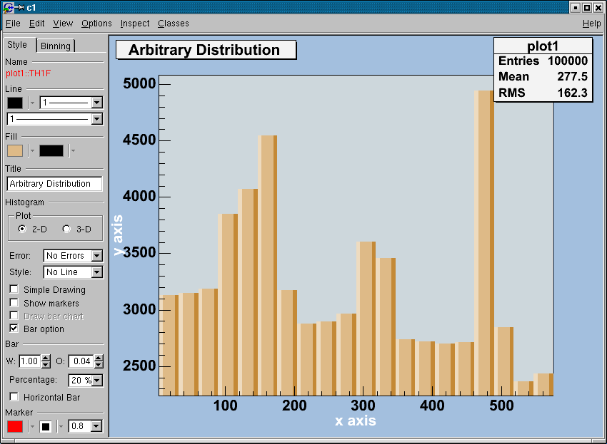
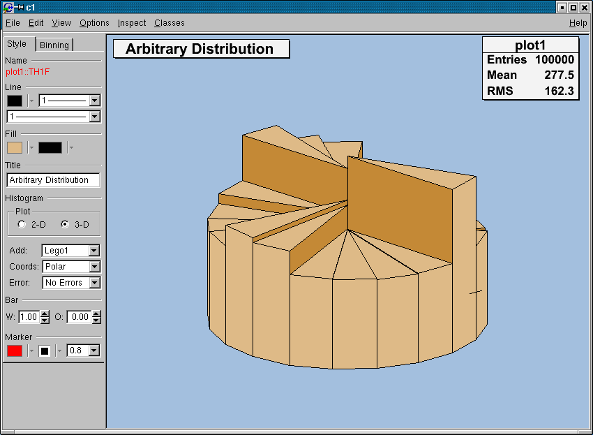
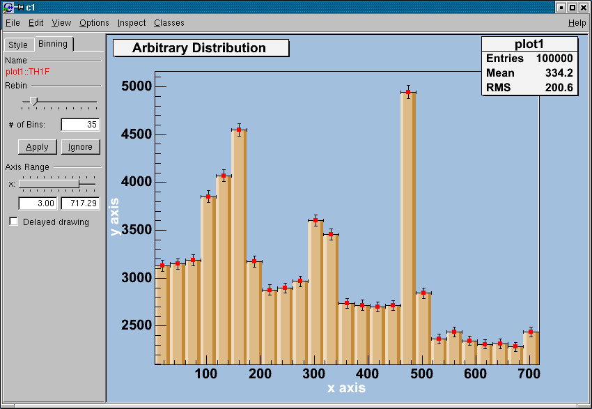
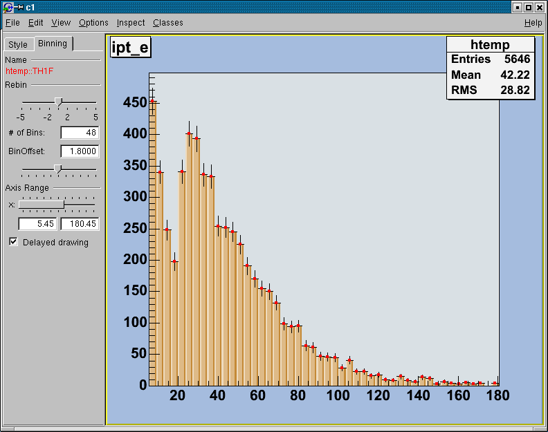
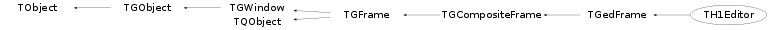

class TH1Editor: public TGedFrame
TH1Editor Editor for changing TH1 histogram attributes, rebinning & fitting. For all possible draw options (there are a few which are not imple- mentable in graphical user interface) see THistPainter::Paint in root/histpainter/THistPainter.cxx/*  */
/*  */
These changes can be made via the TH1Editor: Style Tab: 'Line' : change Line attributes (color, thickness) see TAttLineEditor 'Fill' : change Fill attributes (color, pattern) see TAttFillEditor 'Title' : TextEntry: set the title of the histogram 'Histogram': change the draw options of the histogram 'Plot' : Radiobutton: draw a 2D or 3D plot of the histogram according to the Plot dimension there will be different drawing possibilities (ComboBoxes/ CheckBoxes) 2d Plot: 'Error' : ComboBox: add different error bars to the histogram (no errors, simple, ..., see THistPainter::Paint 'Add' : ComboBox: further things which can be added to the histogram (None, simple/smooth line, fill area 'Simple Drawing': CheckBox: draw a simple histogram without errors (= "HIST" drawoption). In combination with some other draw options an outer line is drawn on top of the histogram 'Show markers': CheckBox: draw a marker on to of each bin (="P" drawoption) 'Draw bar chart': CheckBox: draw a bar chart (="B" drawoption) change the Fill Color with Fill in the Style Tab => will show Bar menue in the Style Tab 'Bar option': CheckBox: draw a bar chart (="BAR" drawoption) => will show Bar menue in the Style Tab 3d Plot: 'Type' : ComboBox: set histogram type Lego-Plot or Surface draw(Lego, Lego1.2, Surf, Surf1..5) see THistPainter::Paint 'Coords' : ComboBox: set the coordinate system (Cartesian, .. Spheric) see THistPainter::Paint 'Error' : see 2D plot 'Bar' : change the bar attributes 'W' : change Bar Width 'O' : change Bar Offset 'Percentage': specifies the percentage of the bar which is drawn brighter and darker (10% == BAR1 drawoption) 'Horizontal Bar': draw a horizontal bar chart 'Marker' : change the Marker attributes (color, appearance, thickness) see TAttMarkerEditor/*
 */
*/
This Tab has two different layouts. One is for a histogram which
is not drawn from an ntuple. The other one is available for a
histogram which is drawn from an ntuple. In this case the rebin
algorithm can create a rebinned histogram from the original data
i.e. the ntuple.
To see te differences do:
TFile f("hsimple.root");
hpx->Draw("BAR1"); // non ntuple histogram
ntuple->Draw("px"); // ntuple histogram
Non ntuple histogram:
'Rebin': with the Slider the number of bins (shown in the field
below the Slider) can be changed to any number which
divides the number of bins of the original histogram.
Pushing 'Apply' will delete the origin histogram and
replace it by the rebinned one on the screen
Pushing 'Ignore' the origin histogram will be restored
Histogram drawn from an ntuple:
'Rebin' with the slider the number of bins can be enlarged by
a factor of 2,3,4,5 (moving to the right) or reduced
by a factor of 1/2, 1/3, 1/4, 1/5
'BinOffset': with the BinOffset slider the origin of the
histogram can be changed within one binwidth
Using this slider the effect of binning the data into
bins can be made visible => statistical fluctuations
'Axis Range': with the DoubleSlider it is possible to zoom into
the specified axis range. It is also possible to set
the upper and lower limit in fields below the slider
'Delayed drawing': all the Binning sliders can set to delay
draw mode. Then the changes on the histogram are only
updated, when the Slider is released. This should be
activated if the redrawing of the histogram is too
time consuming.
/*

*/
/*  */
Function Members (Methods)
public:
protected:
private:
| void | ChangeErrorCombo(Int_t i) |
| TString | GetHistAddLabel() |
| TString | GetHistCoordsLabel() |
| TString | GetHistErrorLabel() |
| TString | GetHistTypeLabel() |
Data Members
public:
| enum TGFrame::[unnamed] { | kDeleteWindowCalled | |
| }; | ||
| enum TGWindow::EEditMode { | kEditEnable | |
| kEditDisable | ||
| kEditDisableEvents | ||
| kEditDisableGrab | ||
| kEditDisableLayout | ||
| kEditDisableResize | ||
| kEditDisableHeight | ||
| kEditDisableWidth | ||
| kEditDisableBtnEnable | ||
| kEditDisableKeyEnable | ||
| }; | ||
| enum TObject::EStatusBits { | kCanDelete | |
| kMustCleanup | ||
| kObjInCanvas | ||
| kIsReferenced | ||
| kHasUUID | ||
| kCannotPick | ||
| kNoContextMenu | ||
| kInvalidObject | ||
| }; | ||
| enum TObject::[unnamed] { | kIsOnHeap | |
| kNotDeleted | ||
| kZombie | ||
| kBitMask | ||
| kSingleKey | ||
| kOverwrite | ||
| kWriteDelete | ||
| }; |
protected:
| TGCompositeFrame* | f10 | Contains the Bar Option Title |
| TGCompositeFrame* | f11 | Contains the Bar Width/Offset NumberEntries |
| TGCompositeFrame* | f12 | Contains fPercentCombo, fMakeHBar |
| TGCompositeFrame* | f15 | Contains outer line CheckBox |
| TGCompositeFrame* | f3 | Contains Histogram Type |
| TGCompositeFrame* | f6 | Contains the Add-ComboBox (Style) |
| TGCompositeFrame* | f7 | Contains the Marker OnOff CheckBox |
| TGCompositeFrame* | f8 | Contains the Bar Chart CheckBox |
| TGCompositeFrame* | f9 | Contains the Bar Option CheckBox |
| TGCheckButton* | fAdd | Activate more Options |
| TGCheckButton* | fAddB | Draw a Bar Chart |
| TGCheckButton* | fAddBar | Bar Option |
| TGComboBox* | fAddCombo | Add Lines, Bars, Fill |
| TGCheckButton* | fAddMarker | Draw a Marker on top of each bin |
| TGCheckButton* | fAddSimple | Draw a simple histogram (==HIST draw option) |
| TGTextButton* | fApply | Apply-Button to accept the rebinned histogram |
| Bool_t | TGedFrame::fAvoidSignal | flag for executing slots |
| Pixel_t | TGFrame::fBackground | frame background color |
| TGNumberEntry* | fBarOffset | Change the Bar Offset |
| TGNumberEntry* | fBarWidth | Change the Bar Width |
| TGCompositeFrame* | fBin | Contains the Binning Widgets |
| TGCompositeFrame* | fBinCont | Contains the Rebin Widgets for case 1 |
| TGCompositeFrame* | fBinCont1 | Contains the Rebin Widgets for case 2 |
| TGNumberEntryField* | fBinNumberEntry | Label which shows the rebinned bin number |
| TGNumberEntryField* | fBinNumberEntry1 | Label which shows the rebinned bin number for ntuple histogram |
| TGHSlider* | fBinOffsetSld | Add an offset to the origin of the histogram |
| TGHSlider* | fBinSlider | Slider to set rebinning integer value |
| TGHSlider* | fBinSlider1 | Slider to set rebinning integer value for ntuple histogram |
| Int_t | TGFrame::fBorderWidth | frame border width |
| TGTextButton* | fCancel | Cancel-Button to reprobate the rebinned histogram |
| TGClient* | TGObject::fClient | Connection to display server |
| TGComboBox* | fCoordsCombo | Coordinate System combo box |
| Int_t | TGFrame::fDNDState | EDNDFlags |
| TGCheckButton* | fDelaydraw | Delayed drawing of the new axis range |
| TGRadioButton* | fDim | 2D-Plot RadioButton |
| TGRadioButton* | fDim0 | 3D-Plot RadioButton |
| TGLayoutHints* | fDim0lh | layout hints for 3D-Plot RadioButton |
| TGHButtonGroup* | fDimGroup | Radiobuttongroup to change 2D <-> 3D-Plot |
| TGLayoutHints* | fDimlh | layout hints for 2D-Plot RadioButton |
| UInt_t | TGWindow::fEditDisabled | flags used for "guibuilding" |
| TGComboBox* | fErrorCombo | Error combo box |
| UInt_t | TGFrame::fEventMask | currenty active event mask |
| TList* | TGedFrame::fExtraTabs | addtional tabs in ged editor |
| TGFrameElement* | TGFrame::fFE | pointer to frame element |
| TGedEditor* | TGedFrame::fGedEditor | manager of this frame |
| UInt_t | TGFrame::fHeight | frame height |
| TH1* | fHist | histogram object |
| TGCheckButton* | fHistOnOff | Draw a simple histogram with default options |
| Handle_t | TGObject::fId | X11/Win32 Window identifier |
| Bool_t | TGedFrame::fInit | init flag for setting signals/slots |
| Bool_t | TGCompositeFrame::fLayoutBroken | no layout manager is used |
| TGLayoutManager* | TGCompositeFrame::fLayoutManager | layout manager |
| TList* | TGCompositeFrame::fList | container of frame elements |
| TList* | TQObject::fListOfConnections | ! list of connections to this object |
| TList* | TQObject::fListOfSignals | ! list of signals from this object |
| TGCheckButton* | fMakeHBar | Draw Horizontal Bar Chart |
| Bool_t | TGCompositeFrame::fMapSubwindows | kTRUE - map subwindows |
| UInt_t | TGFrame::fMaxHeight | maximal frame height |
| UInt_t | TGFrame::fMaxWidth | maximal frame width |
| UInt_t | TGFrame::fMinHeight | minimal frame height |
| UInt_t | TGFrame::fMinWidth | minimal frame width |
| TClass* | TGedFrame::fModelClass | class corresponding to instantiated GedFrame |
| Int_t | TGCompositeFrame::fMustCleanup | cleanup mode (see EFrameCleanup) |
| TString | TGWindow::fName | name of the window used in SavePrimitive() |
| Bool_t | TGWindow::fNeedRedraw | kTRUE if window needs to be redrawn |
| TGNumberEntryField* | fOffsetNumberEntry | Shows the offset to the origin of the histogram |
| UInt_t | TGFrame::fOptions | frame options |
| const TGWindow* | TGWindow::fParent | Parent window |
| TGComboBox* | fPercentCombo | Percentage of the Bar which is drawn in a different color |
| Int_t | TGedFrame::fPriority | location in GedEditor |
| Bool_t | fSameOpt | flag for option "same" |
| Bool_t | TQObject::fSignalsBlocked | ! flag used for suppression of signals |
| TGNumberEntryField* | fSldMax | Contains the maximum value of the x-Axis |
| TGNumberEntryField* | fSldMin | Contains the minimum value of the x-Axis |
| TGDoubleHSlider* | fSlider | Slider to set x-axis range |
| TGTextEntry* | fTitle | histogram title input field |
| Int_t | fTitlePrec | font precision level |
| TGComboBox* | fTypeCombo | histogram type combo box |
| UInt_t | TGFrame::fWidth | frame width |
| Int_t | TGFrame::fX | frame x position |
| Int_t | TGFrame::fY | frame y position |
| static Bool_t | TQObject::fgAllSignalsBlocked | flag used for suppression of all signals |
| static const TGGC* | TGFrame::fgBckgndGC | |
| static const TGGC* | TGFrame::fgBlackGC | |
| static Pixel_t | TGFrame::fgBlackPixel | |
| static Int_t | TGWindow::fgCounter | counter of created windows in SavePrimitive |
| static Window_t | TGFrame::fgDbw | |
| static Int_t | TGFrame::fgDbx | |
| static Int_t | TGFrame::fgDby | |
| static Pixel_t | TGFrame::fgDefaultFrameBackground | |
| static TGLayoutHints* | TGCompositeFrame::fgDefaultHints | default hints used by AddFrame() |
| static Pixel_t | TGFrame::fgDefaultSelectedBackground | |
| static const TGGC* | TGFrame::fgHilightGC | |
| static Bool_t | TGFrame::fgInit | |
| static UInt_t | TGFrame::fgLastButton | |
| static Time_t | TGFrame::fgLastClick | |
| static const TGGC* | TGFrame::fgShadowGC | |
| static UInt_t | TGFrame::fgUserColor | |
| static const TGGC* | TGFrame::fgWhiteGC | |
| static Pixel_t | TGFrame::fgWhitePixel |
private:
| TH1* | fBinHist | Cloned histogram for rebin |
| Bool_t | fMake | Veto Variable |
| Bool_t | fMakeB | avoid execution of Bar Slots |
| Double_t | fOldOffset | save the old offset of the histogram |
| Float_t | fP1NDCold[3] | |
| Float_t | fP1old[3] | |
| Float_t | fP2NDCold[3] | |
| Float_t | fP2old[3] | |
| Float_t | fP3NDCold[3] | |
| Float_t | fP3old[3] | |
| Float_t | fP4NDCold[3] | |
| Float_t | fP4old[3] | |
| Float_t | fP5old[3] | |
| Float_t | fP6old[3] | |
| Float_t | fP7old[3] | |
| Float_t | fP8old[3] | |
| Int_t | fPx1old | |
| Int_t | fPx2old | |
| Int_t | fPy1old | |
| Int_t | fPy2old |
Class Charts
{kind=link}
{kind=link}
{kind=link}
{kind=link}

Function documentation
TH1Editor(const TGWindow* p = 0, Int_t width = 140, Int_t height = 30, UInt_t options = kChildFrame, Pixel_t back = GetDefaultFrameBackground())
Constructor of histogram attribute GUI.
void DoAddSimple(Bool_t on)
Slot connected to fAddSimple check box for drawing a simple histogram without errors (== HIST draw option) in combination with some other draw options. It draws an additional line on the top of the bins.
void DoHistChanges()
Slot connected to the histogram type, the coordinate type, the error type and the Add combo box.
void DoSliderMoved()
Slot connected to the x-Slider for redrawing of the histogram according to the new Slider range.
void DoSliderPressed()
Slot connected to the x-axis Range slider for initialising the values of the slider movement.
void DoSliderReleased()
Slot connected to the x-axis Range slider for finalizing the values of the slider movement.
void DoAxisRange()
Slot connected to the number entry fields containing the Max/Min value of the x-axis.
void DoBinReleased()
Slot connected to the rebin slider in case of a not ntuple histogram Updates some other widgets which are related to the rebin slider.
void DoBinMoved(Int_t number)
Slot connected to the rebin slider in case of a not ntuple histogram (does the Rebinning of the histogram).
void DoBinReleased1()
Slot connected to the BinNumber Slider in case of a ntuple histogram (does the Rebinning of the histogram).
void DoBinMoved1()
Slot connected to the rebin slider in case of an ntuple histogram. It updates the BinNumberEntryField during the BinSlider movement.
void DoOffsetPressed()
Slot connected to the OffSetSlider that saves the OldBinOffset (nessesary for delay draw mode).
void DoOffsetReleased()
Slot connected to the OffSetSlider. It changes the origin of the histogram inbetween a binwidth and rebin the histogram with the new Offset given by the Slider.
void DoOffsetMoved(Int_t num)
Slot connected to the OffSetSlider. It changes the origin of the histogram inbetween a binwidth and rebin the histogram with the new offset given by the Slider.
void DoBinOffset()
Slot connected to the OffSetNumberEntry which is related to the OffSetSlider changes the origin of the histogram inbetween a binwidth.
TString GetHistCoordsLabel()
Return the selected coordinate system of the histogram (POL,CYL,SPH,PSR).
TGComboBox* BuildHistCoordsComboBox(TGFrame* parent, Int_t id)
Create coordinate system type combo box.
TGComboBox* BuildPercentComboBox(TGFrame* parent, Int_t id)
Create Percentage combo box for bar option.
Int_t* Dividers(Int_t n)
Return an array of dividers of n (without the trivial divider n). The number of dividers is saved in the first entry.